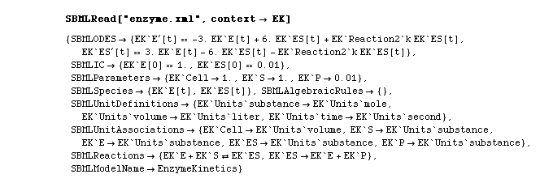

SBMLRead Examples
Return Value | Options | Variable Names and Scoping | ExamplesClick on an Example to jump directly to it.
- Read file and return a value using default settings.
- Read file and change context.
- Read file and only return some of the data.
- Read file without displaying its contents.
- Read file and display statistics.
- Read file and display an interpretive listing.
- Read, solve, and plot using SBMLNDSolve and SBMLPlot.
- Read, solve, and plot using native functions NDSolve and Plot.
- Read, solve, and plot using automated SBMLRead options.
Example 1: Read a file and return a value using default settings.
{kind=link}

Example 2: Read a file and change the context; otherwise use all default settings.

Example 3: Read a file and inhibit the return of all data except for ODEs, species, and initial conditions.
Example 4: Read a file but do not display its contents.
If you put a semicolon at the end of the SBMLRead["enzyme.xml"] statement, the return value is not displayed. By setting it equal to m the value of m is set to the value returned by SBMLRead. The second input line, typing m without a semicolon, tells Mathematica to display the value of m.
Example 5: Read a file and display statistics.
Example 6: Verbose Listing.
{kind=link}
Example 7: Read, Solve, and Plot.
Here SBMLNDSolve is used to solve the model for 1 second, and then SBMLPlot is used to plot all model variables on a single graph. The /.{EK`Reaction2`k -> .1} is used to set the value of parameter k in reaction 2, since it is not defined in the model.
The following illsutrates what happens if we do not set the value of the missing parameter.
The line starting with >>Error is MathSBML catching the missing parameter and telling you that NSDSolve will probably crash. The next line, beginning with "NDSolve::ndnum" is the message generated by Mathematica. The final line, starting with "NDSolve[{EK ..." gives the actual call to NDSolve that failed.
Example 8: Read, then solve and plot using native functions.
Example 9: Read, then solve and plot using automated options in SBMLRead.
View input file. - Note that this is a different imput file from the earlier versions because the parameter k in reaction 2 is set in the model!
{kind=link}
Observe that there is an extra field - SBMLNumericalSolution - in the return value from SBMLRead.
Go to the top of this page